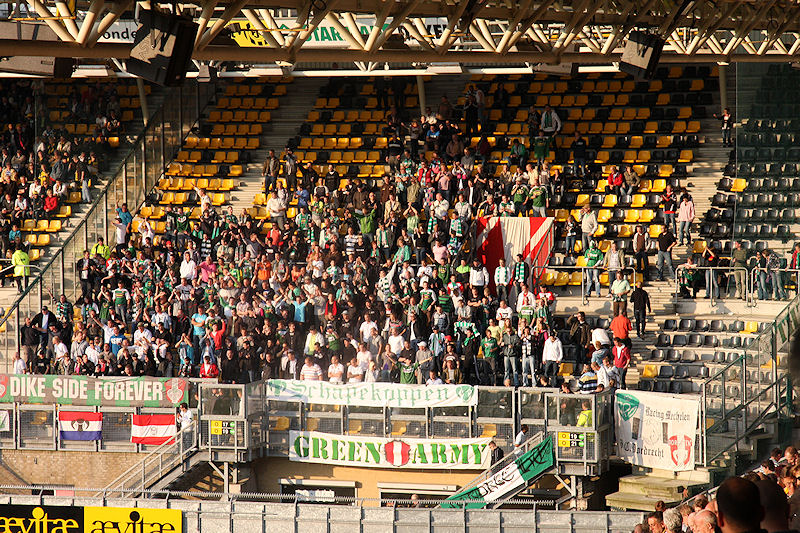
Een kleine 500 Dordtenaren reisden af op eigen kosten maar kregen enkele
consumpties van hun club.
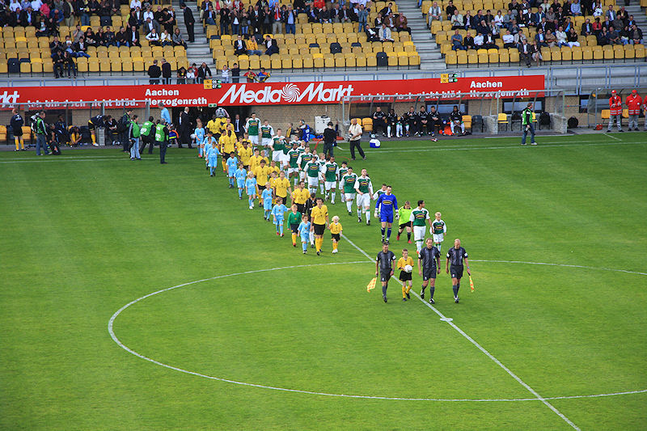
De beginsituatie: Castro, De Fauw, De Wree, Kah, De Jong, Meeuwis, Bodor,
Vormer, Hadouir, Cissé, Matondo.
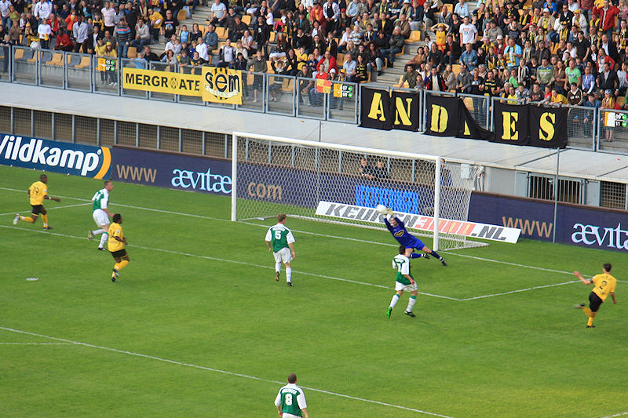
Roda speelt nerveus, maakt veel fouten maar krijgt niettemin de beste
kansen.
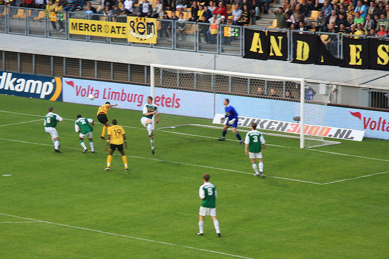
Matondo kopt naast.
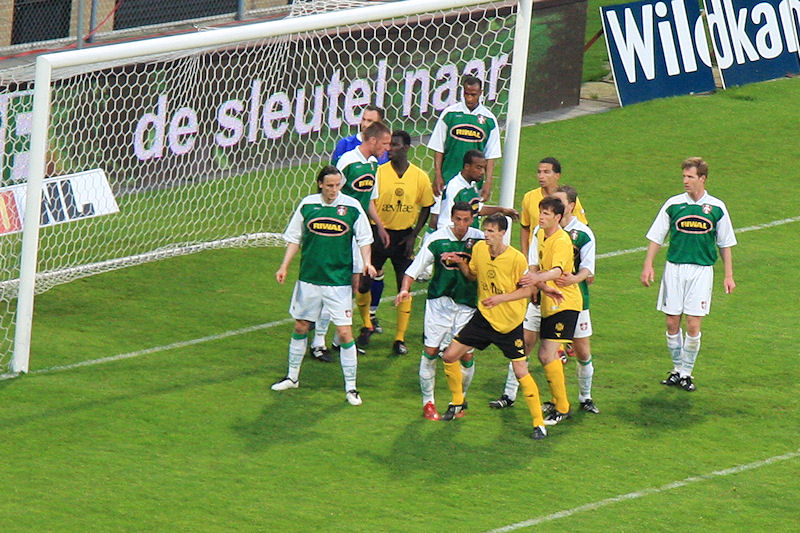
Dordrecht metselt het doel dicht bij een corner van Roda.
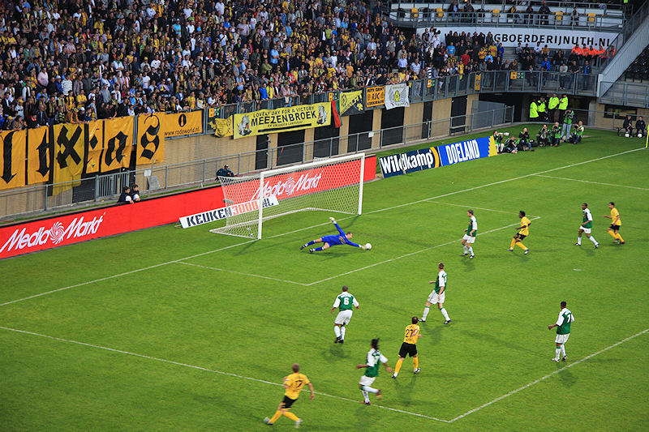
Een afstandsschot van Bodor raakt net buiten bereik van doelman Peersman. De
bal belandt op de paal en stuit terug.
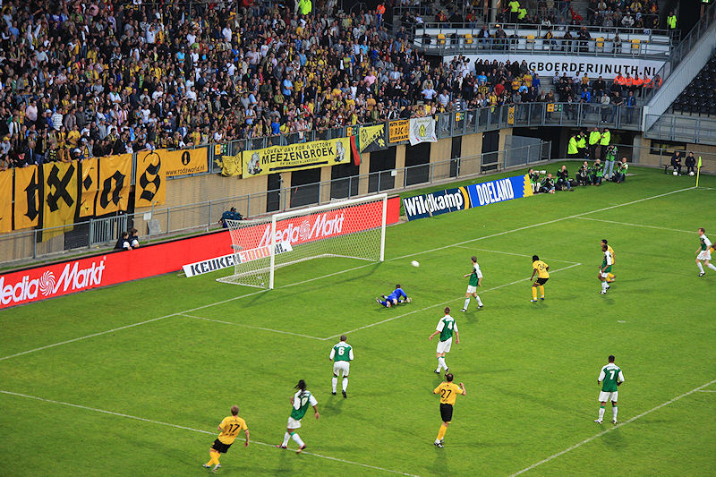
Matondo kan vervolgens simpel binnen tikken: 1-0, (57').
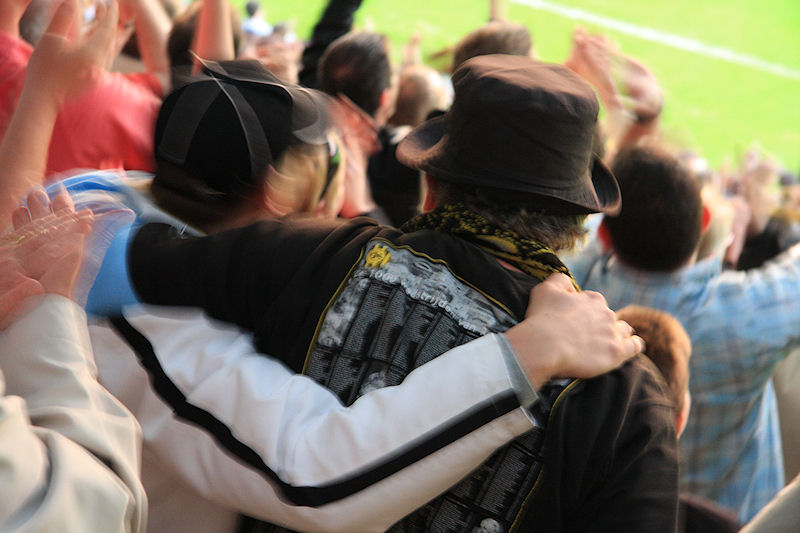
Vreugdevolle taferelen, net zoals deze hele reportage, met een heeeeel foute
camera-instelling.... Maar niettemin JOOOOL !!!
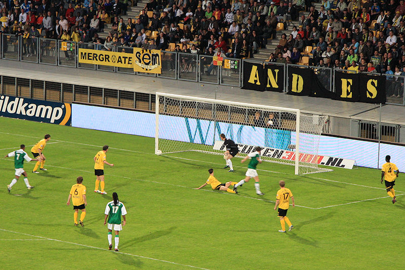
In de slotfase gaat het bijna mis. Een decimeter, meer scheelde een deceptie
niet...
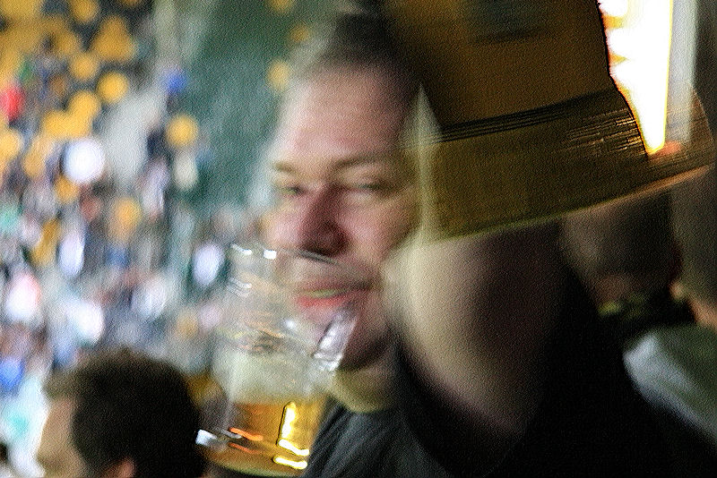
Ralph S. viert de overwinning.
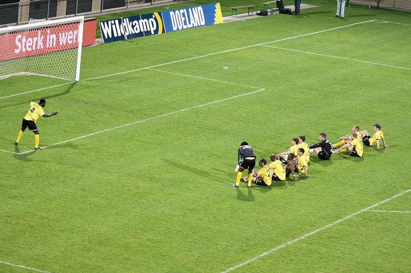
Kah dirigeert het tetereee....
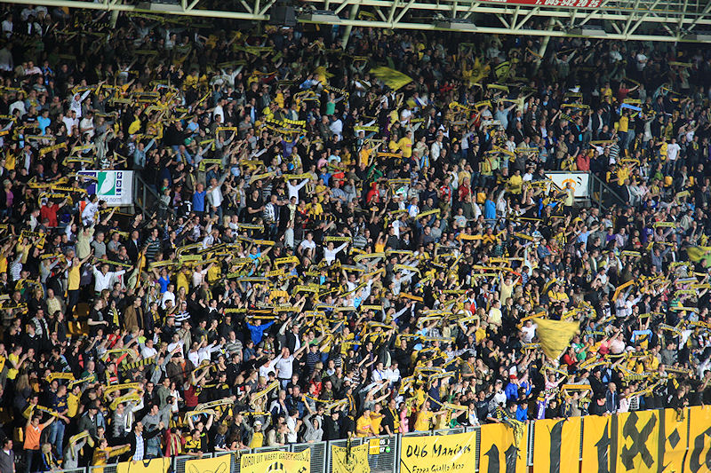
Eindelijk weer eens een bijna-volle bak.
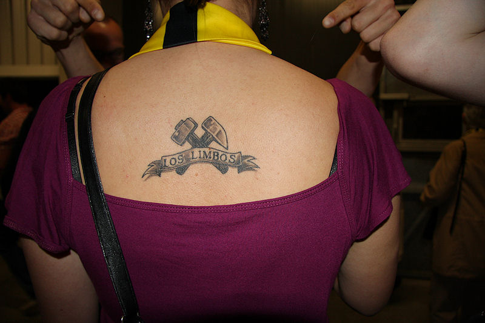
Kelly toont hoe de passies voor Roda JC en Rowen Hèze in één tattoo gevat
kunnen worden!
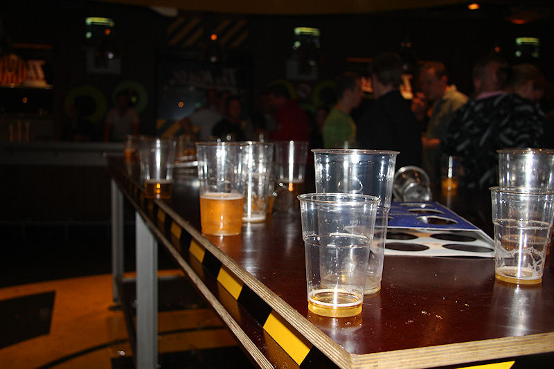
Het bier raakte op. Pas na een halfuur kwam er nieuw levens-elixer, maar
toen was de Kickoff al bijna leeggestroomd.
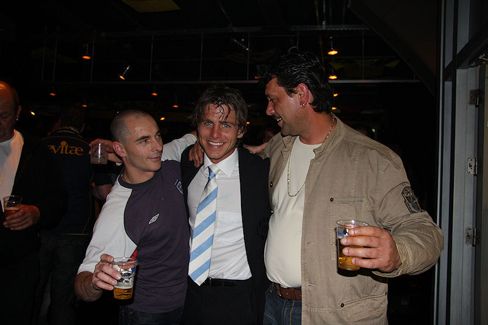
Sinds lange tijd weer een voetballer in de Kickoff. Marcel Meeuwis, de naar
BMG vertrekkende middenvelder.
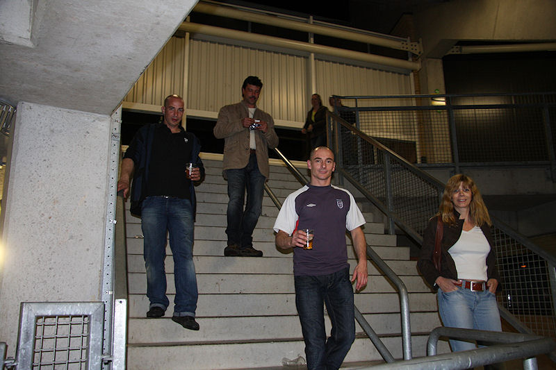
Roda moet het volgende week opnemen tegen Cambuur of FC Zwolle.